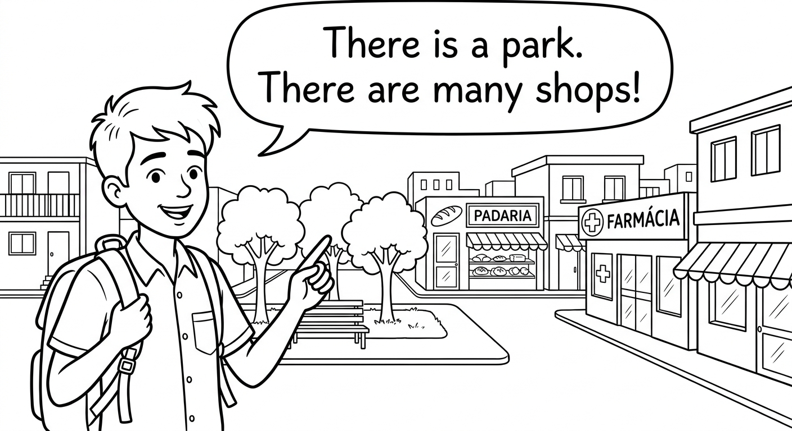
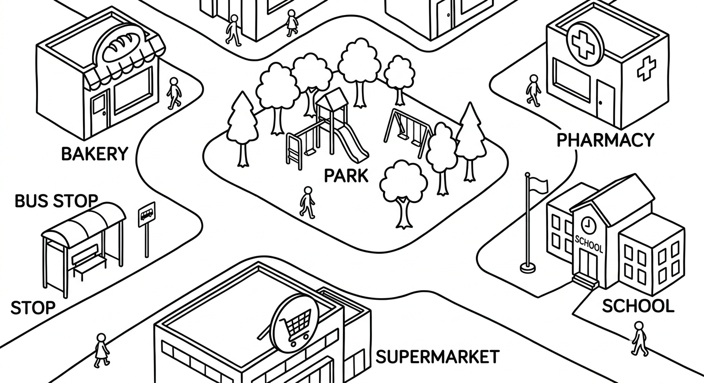
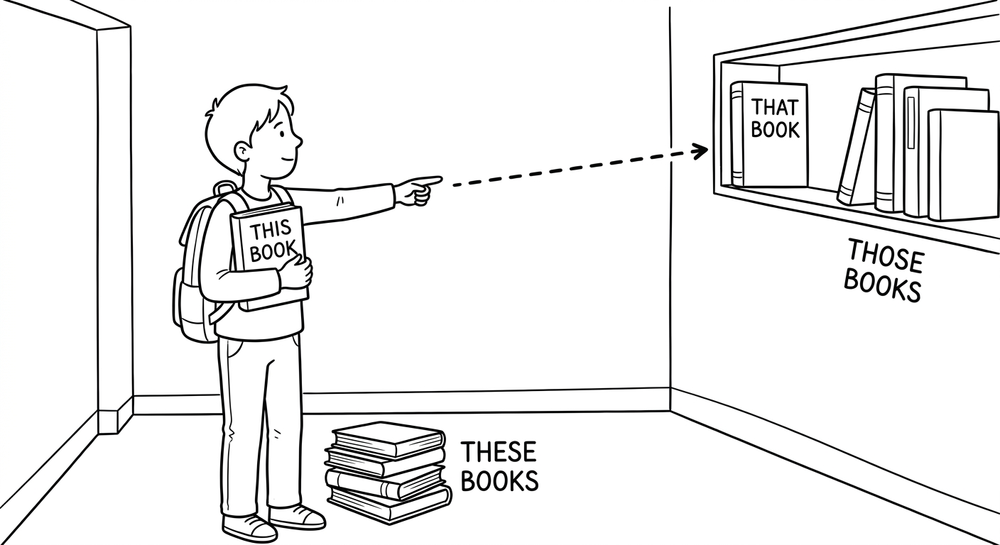
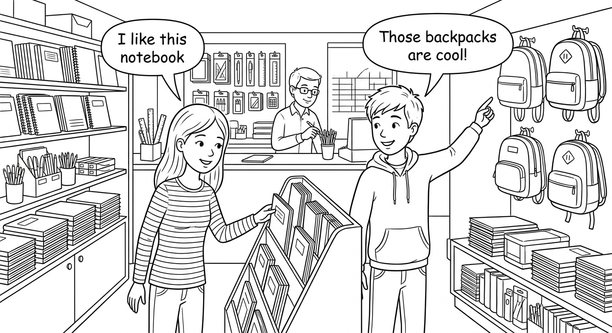
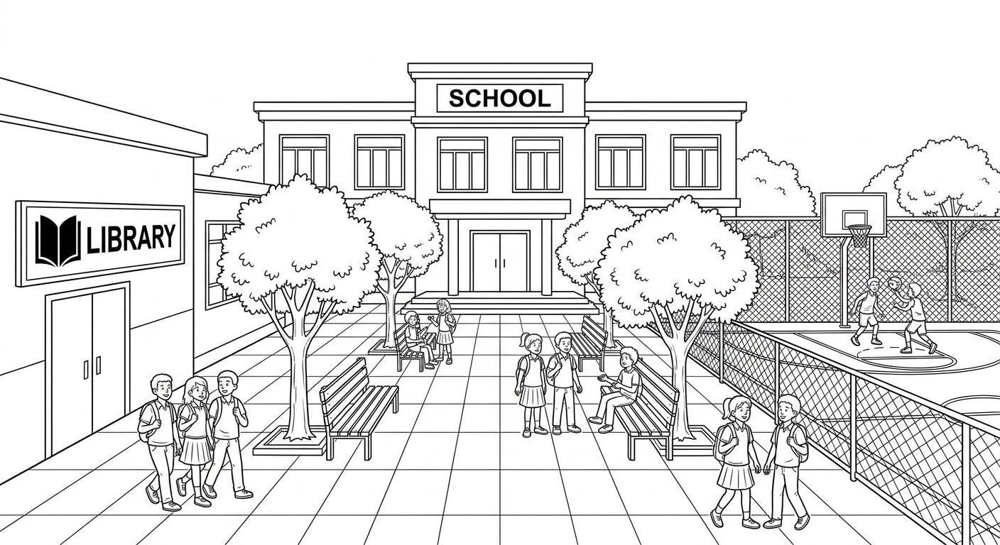

Quantifiers in Existential Sentences & Demonstratives as Determiners
Learn to describe what exists in places using there is and there are with quantifiers, and use demonstratives (this, that, these, those) to point to specific things near and far.

Quantifiers in Existential Sentences (There is / There are)
We use there is and there are to say that something exists in a place.
| Structure | Use | Example |
|---|---|---|
| There is + singular noun | One thing | There is a park near my house. |
| There is + uncountable noun | Uncountable things | There is water in the bottle. |
| There are + plural noun | More than one | There are three schools in my neighborhood. |
| There isn't / There aren't | Negative | There isn't a hospital nearby. |
| Is there...? / Are there...? | Questions | Is there a pharmacy on this street? |
Quantifiers tell us how much or how many of something exists. Different quantifiers go with different types of nouns.
| With Uncountable Nouns (There is...) | Português | Example |
|---|---|---|
| some | algum(a), um pouco de | There is some milk in the fridge. |
| a little | um pouco de | There is a little sugar left. |
| much (questions/negatives) | muito(a) | There isn't much time. |
| no | nenhum(a) | There is no water in the pool. |
| a lot of | muito(a) | There is a lot of traffic today. |
| With Plural Nouns (There are...) | Português | Example |
|---|---|---|
| some | alguns/algumas | There are some books on the shelf. |
| a few | alguns/algumas, poucos(as) | There are a few students in the classroom. |
| many | muitos(as) | There are many restaurants downtown. |
| no | nenhum(a) | There are no chairs in the room. |
| a lot of | muitos(as) | There are a lot of trees in the park. |
Vocabulary: Places and Things in a City
| English | Português | Example Sentence |
|---|---|---|
| park | parque | There is a beautiful park near my house. |
| hospital | hospital | There is a hospital on the main avenue. |
| pharmacy | farmácia | There are two pharmacies on this street. |
| bakery | padaria | There is a bakery next to the school. |
| bus stop | ponto de ônibus | There are many bus stops in the city center. |
| supermarket | supermercado | There is a big supermarket near the square. |
| church | igreja | There is an old church in the town center. |
| library | biblioteca | There is a library at my school. |
| traffic light | semáforo | There are three traffic lights on this road. |
| bridge | ponte | There is a bridge over the river. |
| sidewalk | calçada | There are wide sidewalks in this neighborhood. |
| square / plaza | praça | There is a square with a fountain downtown. |
| bench | banco (de praça) | There are some benches under the trees. |
| trash can | lixeira | There aren't enough trash cans on the street. |
| crosswalk | faixa de pedestres | There is a crosswalk in front of the school. |
| playground | parquinho / playground | There is a playground for children in the park. |
Examples: There is / There are with Quantifiers
There are some trees in the square.
Há algumas árvores na praça.
There are a few restaurants near the beach.
Há alguns restaurantes perto da praia.
There are many people at the bus stop.
Há muitas pessoas no ponto de ônibus.
There is a little noise outside.
Há um pouco de barulho lá fora.
There is some water in the fountain.
Há um pouco de água na fonte.
There are no parking spaces on this street.
Não há vagas de estacionamento nesta rua.
There are a lot of shops in the shopping center.
Há muitas lojas no centro comercial.
There is a lot of pollution in big cities.
Há muita poluição nas grandes cidades.

In Portuguese, we use "Há" or "Tem" for both singular and plural: "Há um parque" and "Há muitos parques." In English, you must choose between "There is" (singular/uncountable) and "There are" (plural). Pay attention to the noun that comes after!
Suggested time: 30 minutes
L1 Interference: Brazilian students often say "Have a park near my house" because in Portuguese we can say "Tem um parque perto da minha casa." Emphasize that English uses "There is/There are" to express existence, not "have." Write the incorrect form on the board, cross it out, and replace it with the correct form:
Have a park near my house.→ There is a park near my house.Have many people here.→ There are many people here.
Activity: Show students a picture of a city or neighborhood. Ask them to make sentences using "There is/There are" with different quantifiers. Encourage them to describe their own neighborhood.
Fill in each blank with There is or There are and, when indicated, the correct quantifier from the word bank. Use each quantifier only once.
Word bank: some, a few, many, a little, no, a lot of, much, any
(Há alguns parques bonitos em Curitiba.) There are some
(Há um pouco de leite no pacote.) There is a little
(Há muitos alunos na biblioteca da escola hoje.) There are many
(Não há açúcar neste café. Está amargo!) There is no
(Há muitos carros na rodovia durante o horário de pico.) There are a lot of
(Há algumas laranjas na fruteira.) There are a few
(Não há muito tempo antes da prova. Vamos nos apressar!) There isn't much
(Há muito barulho vindo do canteiro de obras.) There is a lot of
(Há algum bom restaurante perto da sua casa?) there any
(Não há bancos na praça nova. Temos que ficar em pé.) There are no
Select the correct option to complete each sentence.
_______ a supermarket on Rua das Flores.
b) There is_______ many pharmacies in this neighborhood?
b) Are thereThere _______ a lot of traffic on Avenida Paulista during the week.
c) isThere are _______ chairs in the classroom. We need more.
b) a fewThere isn't _______ water in the swimming pool. It's almost empty.
c) muchDemonstratives as Determiners: This, That, These, Those
Demonstratives point to specific things. We choose the demonstrative based on number (singular or plural) and distance (near or far).
- This and these → things that are near (close to the speaker)
- That and those → things that are far (away from the speaker)
| Singular | Plural | Português | |
|---|---|---|---|
| Near (perto) | this this book |
these these books |
este(a) / estes(as) |
| Far (longe) | that that building |
those those buildings |
aquele(a) / aqueles(as) |
Note: In English, demonstratives come before the noun, just like in Portuguese:
- This pen = Esta caneta
- Those houses = Aquelas casas
Examples: Demonstratives in Context
This backpack is very heavy.
Esta mochila é muito pesada.
Can you see that building over there? It's the new hospital.
Você consegue ver aquele prédio ali? É o hospital novo.
These exercises are easy.
Estes exercícios são fáceis.
Those mountains in the distance are beautiful.
Aquelas montanhas ao longe são bonitas.
I like this shirt here, but I don't like that one over there.
Eu gosto desta camisa aqui, mas não gosto daquela ali.
These cookies on my plate are chocolate, and those cookies on the counter are vanilla.
Estes biscoitos no meu prato são de chocolate, e aqueles biscoitos no balcão são de baunilha.

Dialogue: At the School Supply Store

this / these = near the speaker (aqui, perto de mim)
that / those = far from the speaker (lá, ali, longe de mim)
Think of it this way: if you can touch it, use this/these. If you need to point to it, use that/those.
Suggested time: 25 minutes
L1 Interference: In colloquial Brazilian Portuguese, the distinction between este/esse/aquele has weakened. Many students use "esse" for both near and far. Reinforce that English strictly maintains the two-way distinction: this/these (near) vs. that/those (far).
Activity: Place objects at different distances in the classroom. Point to each object and ask students to say "this ___" or "that ___" depending on the distance. Then place multiple objects and practice "these" and "those."
Dialogue activity: Read the dialogue aloud with student volunteers. Then ask: "What items did Rafaela and Bruno buy? Which demonstrative did they use for items close to them? Which for items far away?"
Fill in each blank with this, that, these, or those. Pay attention to whether the item is near or far and whether it is singular or plural.
(Esta caneta na minha mão escreve muito bem.) This
(Você consegue ver aqueles pássaros no telhado do outro lado da rua?) those
(Estes sapatos que estou usando são novos.) These
(Olha aquele prédio alto ali! É a biblioteca nova.) that
(Este bolo aqui está delicioso. Prove!) This
(Aqueles alunos na outra mesa são de outra turma.) Those
(Eu adoro esta música que está tocando agora.) this
(Você lembra daquele restaurante onde comemos mês passado? Era longe daqui.) that
(Estes biscoitos no meu prato são de gotas de chocolate.) These
(Quem é aquela pessoa parada no final do corredor?) that
Read each situation on the left. Match it to the correct sentence with the appropriate demonstrative on the right.
Reading: "Our New School"
My name is Gabriela, and I am fifteen years old. This year, my family moved from a small town in Minas Gerais to Belo Horizonte. I started studying at a new school last month, and I want to tell you about it.
Our new school is very big. There is a large courtyard in the center with many trees and benches. There are some flowers near the entrance, and there is a beautiful garden next to the library. The library is my favorite place. There are a lot of books there — about two thousand! There are also some computers that students can use for research.
There are three science laboratories in the school. There is a chemistry lab, a biology lab, and a physics lab. There is also a computer room with many modern computers. There isn't a swimming pool, but there is a big sports court where we play volleyball and futsal.
My classroom is on the second floor. This classroom is very spacious and has large windows. These windows let in a lot of natural light. I sit near the front, so I can see the whiteboard clearly. There are thirty desks in our classroom and there is a bookshelf with some English books near the door.
There is a cafeteria on the ground floor. There are many tables and chairs there, and there is always some delicious food. My friend Mateus loves the rice and beans. There are a few vending machines, but there isn't much variety in the snacks.
I really like this school. There are many kind teachers and there are a lot of interesting activities after class. There is a drama club, a music club, and a robotics club. I joined the music club because I play the guitar. Those clubs at my old school were very small, but these clubs here are much bigger and more organized.
Sometimes I miss my old school and those friends I left behind, but I am happy here. This new school has everything I need, and I am making new friends every day.

Pre-reading activity: Ask students: "What is your school like? What rooms and facilities does it have?" This activates the vocabulary from Unit 5.1 and prepares them for the reading.
Reading strategy: Have students underline all instances of "there is" and "there are" in one color, and all demonstratives (this, that, these, those) in another color while reading. This helps them identify the target structures in context.
Suggested time: 20 minutes (reading + exercises)
Read each sentence. Write T (True) or F (False) based on the text "Our New School."
Answer the questions in complete sentences based on the text.
What is there in the courtyard of Gabriela's school?
There are many trees and benches in the courtyard. There are also some flowers near the entrance and a beautiful garden next to the library.What does Gabriela say about her classroom?
Her classroom is on the second floor. It is very spacious and has large windows that let in a lot of natural light. There are thirty desks and a bookshelf with some English books near the door.What after-school clubs are there at the school?
There is a drama club, a music club, and a robotics club.How does Gabriela compare the clubs at her old school and her new school?
Those clubs at her old school were very small, but these clubs at the new school are much bigger and more organized.Writing: Describe a Place You Know
Write a paragraph (8–12 sentences) describing your classroom or your bedroom. Use "there is / there are" with quantifiers and at least two demonstratives (this, that, these, those). Use the sentence starters and word bank below to help you.
- Start by saying what place you are describing and where it is.
- Use "there is" for singular and uncountable nouns, and "there are" for plural nouns.
- Add quantifiers to make your description more precise: some, a few, many, a lot of, no, a little.
- Use "this/these" for things near you and "that/those" for things far from you.
- Include negative sentences too: "There isn't a TV" or "There aren't many windows."
Sentence starters:
- My classroom / bedroom is...
- There is a / an... near / next to / in front of...
- There are some / many / a few... on / under / behind...
- This ... is my favorite because...
- Those ... over there are...
- There isn't / There aren't any...
Word bank: desk, chair, bookshelf, window, poster, lamp, computer, pillow, curtain, whiteboard, closet, rug, wall, door
Suggested time: 20 minutes
Assessment criteria:
- Correct use of "there is" with singular/uncountable nouns
- Correct use of "there are" with plural nouns
- At least 3 different quantifiers used correctly
- At least 2 demonstratives (this/that/these/those) used correctly
- At least 1 negative sentence (there isn't / there aren't)
- Clear and coherent paragraph with descriptive language
Extension activity: Have students swap their paragraphs with a partner. The partner draws a simple sketch of the room based on the description alone. Then they compare the drawing to reality. This helps check if the descriptions are clear and accurate.
Model answer (for teacher reference): "My bedroom is small but comfortable. There is a single bed next to the window. There are some posters on the wall above my bed. There is a desk with a lamp and a few books on it. This desk is where I do my homework every day. There are many clothes in my closet, but there isn't much space left. There is a small rug on the floor. There aren't any plants in my room, but there is a lot of natural light because there are two big windows. Those curtains on the far window are blue, and this curtain near my bed is white. I like my room because it is quiet and cozy."
Chapter 5 - Answer Key
Exercise 1: Complete with "There is" or "There are" + Quantifier
Exercise 2: Choose the Correct Option
Exercise 3: Complete with This, That, These, or Those
Exercise 4: Match the Situation to the Correct Demonstrative
Exercise 5: True or False
Exercise 6: Answer the Questions
Exercise 7: Write About Your Classroom or Bedroom
Answers will vary. Check for correct use of "there is" with singular/uncountable nouns, "there are" with plural nouns, at least 3 different quantifiers, at least 2 demonstratives (this/that/these/those), at least 1 negative sentence, and coherent paragraph structure.